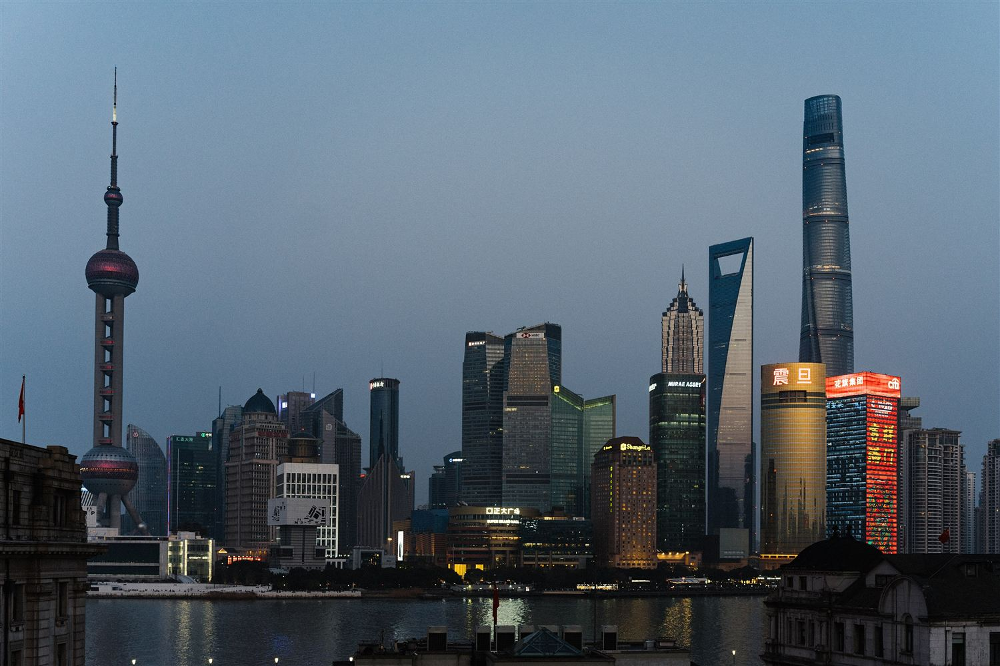

Tappa 6 di 6 · 4 notti
Mercoledì 11 — domenica 15 novembre · arrivo in volo, e da qui si torna a casa

Quattro notti sono tante per Shanghai da sola, e questa è la cosa migliore che potesse capitare all'itinerario.
Il giorno che recupera le due città che l'itinerario aveva perso, senza valigie e senza cambiare hotel.
Una sola, non due. Con il buio alle cinque, una gita in giornata è già una giornata piena.
Quattro notti lasciano spazio a cose che le guide non mettono. Quelle senza avviso in rosso sono verificate; le altre hanno un ostacolo o una trappola.
Il Propaganda Poster Art Centre, collezione privata di Yang Peiming: migliaia di manifesti originali dell'era maoista. 25 RMB, aperto 10:00–17:00 con ultimo ingresso alle 16:30, e basta un'ora. Sta al settimo piano dell'edificio est, al 726 di Yan'an West Road, distretto di Changning, dentro un palazzo di uffici con pochissime insegne.
Il 1933 Laozhabang, a Hongkou, poco a nord del Bund: cemento, rampe elicoidali e ponti sospesi, progettati perché i bovini salissero senza accorgersene. Oggi è un complesso creativo e si attraversa liberamente.
Non c'è una linea retta in tutto l'edificio, e la cupola proietta il cielo reale. Sta a circa un'ora dal centro, in fondo a Pudong: vale come impiego di mezza giornata, in concorrenza con la gita di sabato, non come tappa obbligata.
L'indirizzo dei manifesti che trovi in giro è quello sbagliato. Il museo ha traslocato nel dicembre 2019 e quasi tutte le guide e le mappe riportano ancora il vecchio recapito, il seminterrato di Huashan Road. Chi parte con quello si perde: conta solo Yan'an West Road, scritto qui sopra.
Robotaxi — con attrito, e le fonti si contraddicono. Confermato: a febbraio 2026 Alipay ha lanciato una mini-app «Robotaxi» che aggrega operatori come Pony.ai, attiva in parti di Guangzhou, Dongguan, Pechino, Wuhan e Shenzhen; a Shanghai, Pony.ai ha il permesso per il servizio senza conducente a Pudong, nella zona Jinqiao–Huamu vicino al Century Park, a circa 2,8 RMB/km, dalle 7:30 alle 21:30 nei giorni feriali. Non confermato: una fonte sostiene che con passaporto e numero internazionale la registrazione funzioni, un'altra, di maggio 2026, che tutte le app pretendano un numero cinese per l'SMS di verifica. Tenta dalla mini-app di Alipay, che è già in checklist — ma non costruirci sopra una giornata.
Il check-out è a mezzogiorno e si parte alle 17:30: in mezzo ci sono cinque ore e mezza da passare con le valigie appresso. Chiedi il deposito bagagli quando arrivi, non l'ultima mattina. L'alternativa è andare a Pudong prima e lasciare tutto lì, ma vuol dire rinunciare all'ultimo pomeriggio in città.
Per Pudong ci vuole un'ora. Metro linea 2 fino a Longyang Road, poi il Maglev: 430 km/h e otto minuti di volo raso. Uscendo alle 17:30 sei in aeroporto verso le 18:30, cioè due ore prima del decollo. Basta, ma senza margine per un imprevisto: se vuoi dormire tranquillo la notte prima, esci alle 17:00.
Il Maglev ha un orario e non è un metrò: le corse finiscono nel primo pomeriggio-sera a seconda della stagione. Controlla l'ultima partenza utile il giorno prima — se non torna, la linea 2 arriva comunque a Pudong, ci mette solo molto più tempo.
Da qui il ritorno è su un unico biglietto via Shenzhen: i bagagli vengono etichettati per Malpensa e li rivedi solo là. Quello che ti serve per la notte va in cabina.
| Giorno | Alba | Tramonto | Luce |
|---|---|---|---|
| Mer 11 nov | 06:17 | 16:58 | 10h 41m |
| Gio 12 nov | 06:18 | 16:58 | 10h 40m |
| Ven 13 nov | 06:19 | 16:57 | 10h 38m |
| Sab 14 nov | 06:20 | 16:57 | 10h 37m |
| Dom 15 nov | 06:20 | 16:56 | 10h 36m |
Shanghai è la tappa con il tramonto più presto di tutto il viaggio, quasi un'ora e venti prima di Chengdu: la Cina ha un fuso orario solo e qui siamo all'estremo est. Il buio arriva prima delle cinque, e le giornate vanno programmate al mattino.
Medie di novembre: 10–18°, umido, con il vento che tira lungo il fiume. Sul Bund all'alba serve lo strato caldo che a Yangshuo era in valigia.
La cucina di Shanghai è dolce dove non te lo aspetti: lo zucchero entra anche nei piatti salati.
Sei qui nel mese giusto per il granchio. Il dazhaxie, il granchio peloso del lago Yangcheng, ha la sua stagione in ottobre e novembre e non si mangia in nessun altro periodo dell'anno. Si cuoce al vapore e si mangia con aceto di riso e zenzero, smontandolo pezzo per pezzo: non è un pasto veloce e non è economico, ma è il piatto stagionale più famoso della Cina orientale e capita esattamente adesso.
Ravioli al vapore ripieni di maiale e di brodo in gelatina che si scioglie in cottura. Si mangiano con attenzione: si appoggiano sul cucchiaio, si buca la pasta, si beve il brodo, poi il resto. Chi li morde subito si ustiona, senza eccezioni.
Panini lievitati ripieni, cotti in padella così che il fondo diventi croccante e il resto resti morbido. Anche questi hanno il brodo dentro. È la colazione da portare via del quartiere.
Tre ingredienti: noodles, cipollotti fritti lentamente fino a diventare scuri, salsa di soia. Sembra niente e invece è uno dei piatti più buoni della città. Anche a colazione.
Pancetta di maiale a cubi cotta a lungo in soia, vino di riso e zucchero di canna, finché diventa lucida e si taglia col cucchiaio. È il piatto di casa di tutta la regione, e la prova che qui il dolce e il salato non litigano.
La versione gigante dello xiaolongbao: un raviolo grande come un'arancia, pieno di brodo, che si beve con la cannuccia prima di mangiare la pasta. Metà cibo, metà numero da circo.
Se vai a Suzhou, cerca i noodles in brodo con l'anatra o il pesce di lago. Se vai a Hangzhou, ci sono i gamberi di fiume saltati con il tè Longjing e il maiale di Dongpo. Sono cucine cugine di questa, tutte sul dolce.
Questa nota resta solo su questo dispositivo. Vive nella memoria di questo browser, non passa da nessun server e non la ritrovi da un altro telefono. Se cancelli i dati del browser, non c'è più.